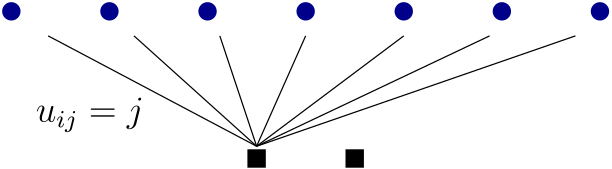
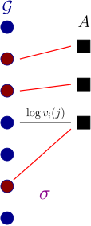
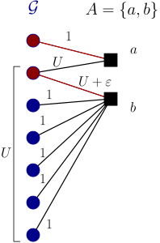
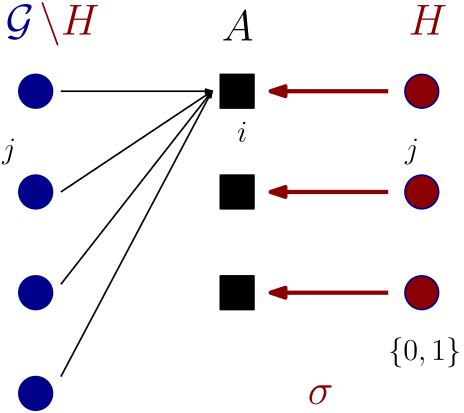
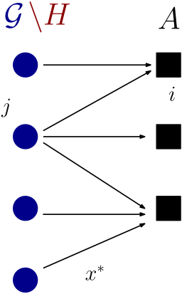
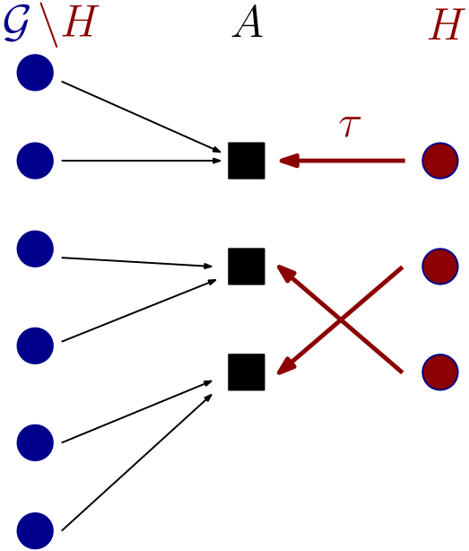

Approximating Nash Social Welfare for asymmetric agents with Rado-valuations
Edin Husić
Allocation problems

Goods $$\mathcal{G}$$ and agents $$A$$.
$$v_i : 2^{\mathcal{G}} \to \mathbb{R}_+$$ is valuation function of agent $$i$$ s.t.:
- $$v_i(\emptyset ) = 0$$.
- $$v_i$$ is monotone.
$$m:=|\mathcal{G}|, n:=|A|$$ and $$m\ge n$$
$$$\max_{x}\left( \prod_{i \in A} v_{i}(x_i) \right)^{1/n}$$$
The Nash Social Welfare (NSW) problem.
Nash-bargaining problems; proportional fairness in networks; CEEI.
Properties:- Scale-freeness.
- A natural compromise between fairness and efficiency.
- NP-hard to compute.
Reduction from SubsetSum: given $$\mathcal{G} \subset \mathbb{R}$$ decide if there is $$A, B$$ partition of
$$\mathcal{G}$$ such that $$$\sum_{a \in A} a = \sum_{b \in B} b.$$$

$$256 e^{3/e}$$-approximation algorithm for agents with Rado-valuations
Given: a bipartite graph $$(\mathcal{G}, T; E)$$ with a weight function
$$c : E \to \mathbb{R}_+$$ on the edges; and a matroid $$\mathcal{M} = (T, \mathcal{I})$$.
For $$S\subseteq \mathcal{G}$$, the Rado valuation function $$v(S)$$ is defined as the weight of a maximum weight matching $$M$$ s.t.:
For $$S\subseteq \mathcal{G}$$, the Rado valuation function $$v(S)$$ is defined as the weight of a maximum weight matching $$M$$ s.t.:
- $$\delta_{\mathcal{G}}(M) \subseteq S$$,
- $$\delta_{T}(M) \in \mathcal{I}$$.
$$(\mathcal{G}, T; E)$$ and $$c : E \to \mathbb{R}_+$$; a matroid $$\mathcal{M} = (T, \mathcal{I})$$.
For $$S\subseteq \mathcal{G}$$, value $$v(S)$$ is the weight of maximum weight matching $$M$$ s.t.:
- $$\delta_{\mathcal{G}}(M) \subseteq S$$,
- $$\delta_{T}(M) \in \mathcal{I}$$.
$$(\mathcal{G}, T; E)$$ and $$c : E \to \mathbb{R}_+$$; a matroid $$\mathcal{M} = (T, \mathcal{I})$$.
For $$S\subseteq \mathcal{G}$$, value $$v(S)$$ is the weight of maximum weight matching $$M$$ s.t.:
- $$\delta_{\mathcal{G}}(M) \subseteq S$$,
- $$\delta_{T}(M) \in \mathcal{I}$$.
Relaxation?
$$$
\begin{aligned}
&\text{max} \quad \left( \prod_{i \in A} v_{i}(x_i) \right)^{1/n}\\
&\begin{aligned}
\text{s.t.: } \quad && \sum_{i\in A} x_{ij} &\le 1 && \forall j \in \mathcal{G} \\
&&x&\ge 0 \,.
\end{aligned}
\end{aligned}
$$$
Unbounded integrality gap:
|
|
Mixed integer relaxation$$$ \begin{aligned} &\text{max} \quad \left( \prod_{i \in A} v_{i}(x_i) \right)^{1/n}\\ &\begin{aligned} \text{s.t.: } \quad && \sum_{i\in A} x_{ij} &\le 1 && \forall j \in \mathcal{G} \\ &&x_{ij} &\in \{0,1\} && \forall j \in H, \forall i\\ &&x&\ge 0 \,. \end{aligned} \end{aligned} $$$ |
|
Upper bound: $$OPT_H$$
Approach:
- Phase I: Find the set $$H$$.
- Phase II: Reduce a problem to another mixed integer program easier to handle.
- Phase III: Approximate the new mixed integer program.
- Phase IV: Find a sparse approximate solution to the new mixed integer program.
- Phase V: Round the sparse solution.
Phase I: finding the set $$H$$.
|  |
$$\sigma$$ be a matching maximizing
$$$\left( \prod_{i \in A} v_{i \sigma(i)} \right)^{1/n}$$$
where $$v_{ij} = v_i(j)$$.
Issue: if we fix $$\sigma$$ immediately $$\implies$$ no constant approximation. |
 $$$\sqrt{1 \cdot 2U} < \sqrt{U \cdot U}$$$ |
Phase II: reduction to a more structured program.
|
Assume $$v_i$$ is subadditive.
We have
$$$
\overline {OPT}_H \ge \frac{1}{e^{1/e}} OPT_H.
$$$
Let $$(x',\sigma)$$ be an $$\alpha$$-approximate optimal solution for Matching relaxation.
Then, $$\overline{NSW}(x',\sigma) \ge \frac{1}{{2\alpha e^{1/e}}} OPT_H$$.
|
|
Phase III: approximating Matching relaxation. |
 |
|
Assume $$v_i$$ are monotone and concave.
There is a polynomial-time algorithm that finds $$(x^*,\pi)$$ such that
$$$ \overline{NSW}(x^*, \pi) \ge \frac{1}{2} \overline {OPT}\,.$$$
If for $$x'$$ holds $$v_i(x'_i) \ge \frac{1}{\alpha} v_i(x^*_i)$$ then $$ \overline{NSW}(x', \pi) \ge \frac{1}{2\alpha} \overline {OPT}$$.
|
|
|
 |
|

|
Phase V: rounding a sparse solution of Matching relaxation.
Assume $$v_i$$ are subadditive.
Let $$(x',\pi)$$ be a feasible solution of Matching relaxation
such that
$$$ |\text{supp}(x')| \le 2n + m \,.$$$
Then in polynomial-time we can find a matching $$\tau: A\to H$$ s. t.: $$$ \overline {NSW}(x'', \tau) \ge \frac{1}{32 (e^{1/e})^2}\overline {NSW}(x', \pi)\,,$$$ where $$x''$$ is integral allocation of $$\mathcal{G}\setminus H$$ and $$\text{supp}(x'') \subseteq \text{supp}(x')$$. Combines $$\sigma$$ and $$\pi$$ to obtain $$\tau$$: uses optimality of $$\sigma$$. |
 |
Phase IV: finding a sparse solution.
|
Assume $$v_i$$ are monotone and concave.
There is a polynomial-time algorithm that finds $$(x^*,\pi)$$ such that
$$ \overline{NSW}(x^*, \pi) \ge \frac{1}{2} \overline {OPT}\,.$$
If for $$x'$$ holds $$v_i(x'_i) \ge \frac{1}{\alpha} v_i(x^*_i)$$ then $$ \overline{NSW}(x', \pi) \ge \frac{1}{2\alpha} \overline {OPT}$$.
We can round any feasible solution $$(x', \pi)$$ provided that
$$$|\text{supp}(x')| \le 2n + m \,.$$$
|
|
|
|
|
There is $$256 e^{3/e}$$-approximation algorithm for the Nash Social Welfare problem for agents endowed with
Rado valuations.
- $$2 e^{1/e}$$ for reduction to Matching relaxation,
- $$4$$ for finding a sparse solution approximating Matching relaxation, and
- $$32 (e^{1/e})^2$$ for the rounding of sparse solution.
$$$\text{Asymmetric NSW: }\max_{x}\left( \prod_{i \in A} v^{w_i}_{i}(x_i) \right)^{1/\sum_{i \in A} w_i}$$$
There is $$256 \gamma^3$$-approximation algorithm for the asymmetric
Nash Social Welfare problem for agents endowed with
Rado valuations.
|
Where $$\gamma = \min \left\{\frac{W}{\log(W)}, n\right\}$$ and $$W= \max_{i\in A} w_i$$. Existing results for the asymmetric NSW:
|
|